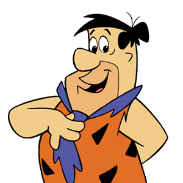

George Allen
Prague College Head of the School of Art and Design George used to have a beard. I don’t know more about George but he looks cool. Oh yeah rumour has it he is killing it in the field of photography.
Stefano Cavagnetto
Prague College Head of the School of Business Stefano is a teacher at IT I guess, don’t know much abou him either except the fact that he looks exactly like a Greek actor .
veronika Douchova
Prague College - Head of School of Media & IT Veronika works at Prague College she is brunette and that is all of it I guess

Tim Cook
Chief Executive Officer of Apple Inc Tim is the new Steve Jobs, well he wishes cause jhe only runs the company without the vision of Jobs. Both being corporate bastards, at least Steve tried to make sth great in terms of technological advancments.
Jonathan Ive
Chief Design Officer of Apple Inc Jonathan works for Apple since your before your Granda got rid of his diapers. He talks like Obama in his videos (spitting general truth in order to avoid the question)
Marissa Mayer
Chief Executive Officer of Yahoo! Marissa works for Yahoo, the company as we learned got sold to Verizon for the ridiculous amount of 4 billion(LMAO). The company bankrupt so I wouldn’t really care to hear what she says.
Elon Musk
CEO of SpaceX Elon Musk is propably the Nikola Tesla of our time(get it ? because he makes TESLA cars). His devotion and the pation for what he does are really inspiring.
Sheryl Sandberg
Chief Operating Officer of Facebook She propably works there to facebook stalk her ex cause you can tell she is holding a grudge. She might have sth good to say